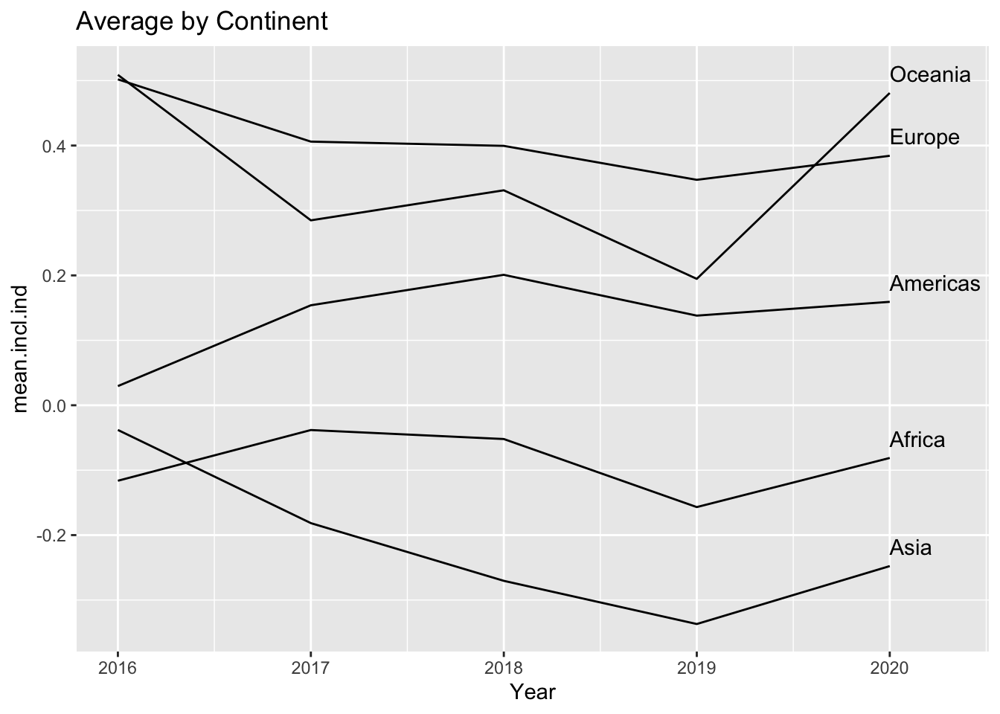
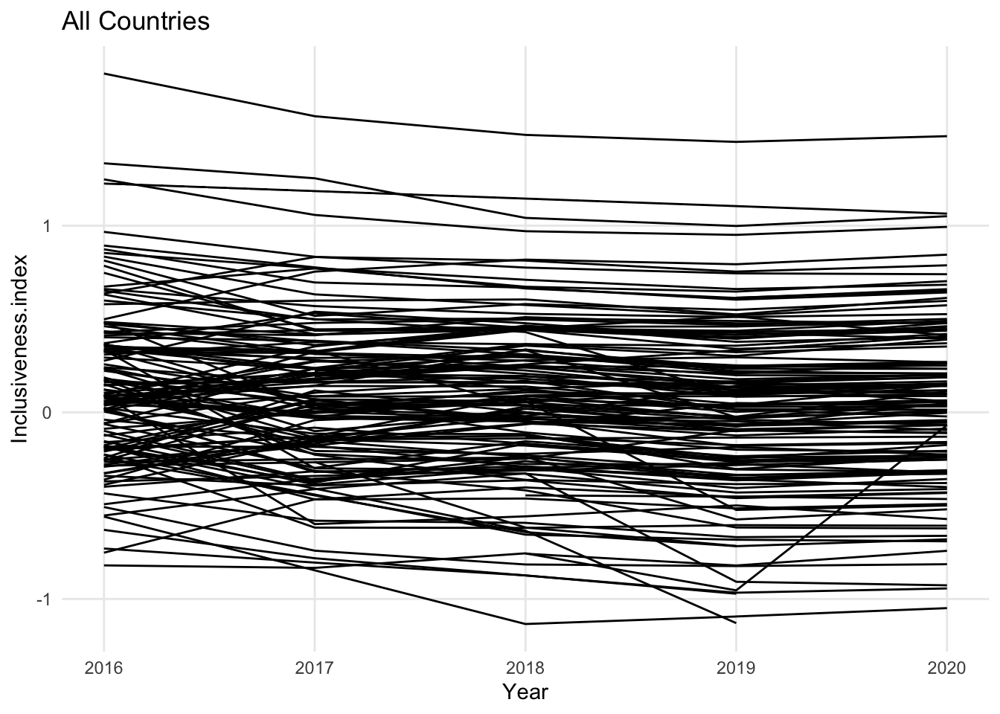
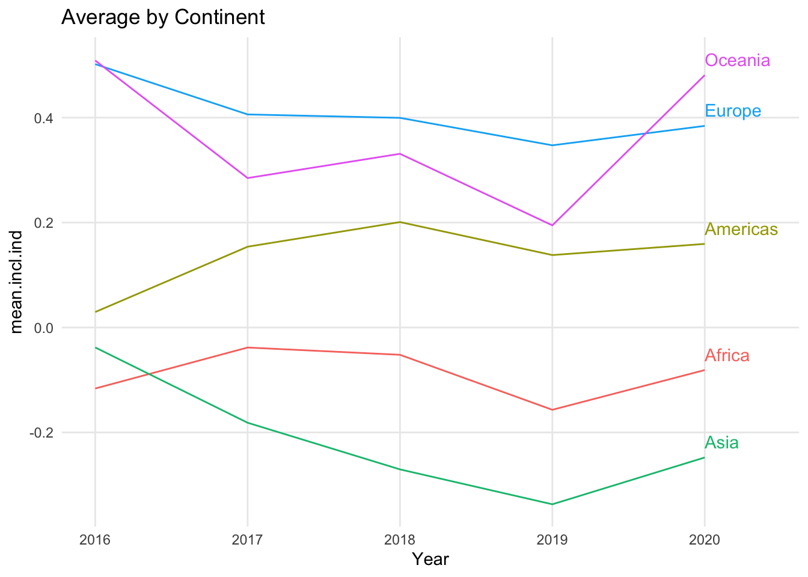

A Datasets
Duke Enrollment
Sample of Duke Enrollment By School dataset, Table A.1.
| Year | Semester | Origin | Region | Sex | School | Count |
|---|---|---|---|---|---|---|
| 1970 | Fall | Alabama | United States | Female | Trinity | 11 |
| 1970 | Fall | Alabama | United States | Female | Graduate | 7 |
| 1970 | Fall | Alabama | United States | Female | Divinity | 1 |
| 1970 | Fall | Alabama | United States | Female | Law | 1 |
| 1970 | Fall | Alaska | United States | Female | Trinity | 1 |
| 1970 | Fall | Alaska | United States | Female | Graduate | 1 |
Coral Resilience Data
Figure A.2.
## Warning: Removed 1 rows containing missing values (geom_point).FIGURE A.2: Log of tissue loss by snail density
Git Experience
A Behavioral Approach to Understanding the Git Experience
# won't work without aggregation
#ggplot(git_experience, aes(x=year_vcs)) +
# geom_line()
ggplot(git_experience %>% count(year_vcs), aes(x=year_vcs, y=n)) +
geom_line()## Warning: Removed 1 row(s) containing missing values (geom_path).
ggplot(git_experience %>% count(year_vcs, first_vcs), aes(x=year_vcs, y=n, color=first_vcs)) +
geom_line()## Warning: Removed 3 row(s) containing missing values (geom_path).# First use vs. now use
first_used <- git_experience %>%
count(first_vcs) %>%
rename("n_first_used" = "n", "system" = "first_vcs")
now_use <- git_experience %>%
pivot_longer(cols=c(first_bazaar,first_cvs,first_git,
first_hg,first_monotone,first_svn, first_other),
names_to = "system") %>%
dplyr::filter(value == TRUE) %>%
count(system) %>%
rename("n_now_use" = "n") %>%
mutate(system = case_when(
system == "first_bazaar" ~ "Bazaar",
system == "first_cvs" ~ "CVS",
system == "first_git" ~ "Git",
system == "first_hg" ~ "Mercurial",
system == "first_monotone" ~ "Monotone",
system == "first_svn" ~ "SVN",
system == "first_other" ~ "Other"
))
combined <- first_used %>% left_join(now_use) %>%
pivot_longer(cols = c(n_first_used, n_now_use),
names_to = "time",
values_to = "count") %>%
drop_na()## Joining, by = "system"ggplot(combined, aes(x=as_factor(time), y=count, group=system, color=system)) +
geom_line()
ggplot(git_experience, aes(x=first_vcs)) +
geom_bar()
ggplot(git_experience %>%
drop_na(first_vcs) %>%
mutate(first_vcs = as_factor(first_vcs) %>%
fct_infreq()),
aes(x=first_vcs)) +
geom_bar()
#How difficult was it for you to learn how to use git on your local computer?
# 1 - Very easy (1)
# 2 - Easy (2)
# 3 - Neutral (Neither easy nor difficult) (3)
# 4 - Difficult (4)
# 5 - Very difficult (5)
ggplot(git_experience %>%
drop_na(local_ease) %>%
mutate(local_ease = as_factor(local_ease) %>%
fct_recode("Very easy"="1",
"Easy"="2", "Neutral"="3",
"Difficult"="4", "Very difficult"="5")),
aes(local_ease)) +
geom_bar()
#How difficult was it for you to learn how to use the git hosting platform (e.g. GitLab, GitHub, etc.)?
# 1 - Very easy (1)
# 2 - Easy (2)
# 3 - Neutral (Neither easy nor difficult) (3)
# 4 - Difficult (4)
# 5 - Very difficult (5)
ggplot(git_experience %>%
drop_na(ghp_ease) %>%
mutate(ghp_ease = as_factor(ghp_ease) %>%
fct_recode("Very easy"="1",
"Easy"="2", "Neutral"="3",
"Difficult"="4", "Very difficult"="5")),
aes(ghp_ease)) +
geom_bar()
# How proficient do you think you are with git?
# 1 - Fundamental Awareness (basic knowledge) (1)
# 2 - Novice (limited experience) (2)
# 3 - Intermediate (practical application) (3)
# 4 - Advanced (applied theory) (4)
# 5 - Expert (recognized authority) (5)
ggplot(git_experience %>%
drop_na(proficiency) %>%
mutate(proficiency = as_factor(proficiency) %>%
fct_recode("Basic Knowledge"="1",
"Novice"="2", "Intermediate"="3",
"Advanced"="4", "Expert"="5")),
aes(proficiency)) +
geom_bar()# How frequently do you have to reteach yourself git?
# Daily (1)
# Weekly (2)
# Once a semester (3)
# Once a year (4)
# Never (5)
# Other: (6)
ggplot(git_experience %>%
drop_na(freq_reteach) %>%
mutate(freq_reteach = as_factor(freq_reteach) %>%
fct_relevel("Daily", "Weekly", "Once a semester",
"Once a year", "Never", "Other:")),
aes(freq_reteach)) +
geom_bar()
git_experience %>% drop_na(first_vcs) %>%
group_by(first_vcs) %>%
summarise(count = n(), mean_prof = mean(proficiency, na.rm=TRUE)) %>%
ggplot(aes(x=first_vcs, y=mean_prof)) +
geom_col()
git_experience %>%
drop_na(first_vcs) %>%
group_by(first_vcs) %>%
summarise(count = n(), mean_proficiency = mean(proficiency, na.rm=TRUE)) %>%
mutate(first_vcs = as_factor(first_vcs) %>%
fct_reorder(mean_proficiency) %>% fct_rev()) %>%
ggplot(aes(x=first_vcs, y=mean_proficiency)) +
geom_col()ggplot(git_experience, aes(x=year_vcs, y=first_vcs)) +
geom_count()## Warning: Removed 15 rows containing non-finite values (stat_sum).
git_experience %>%
drop_na(year_vcs, first_vcs) %>%
group_by(year_vcs, first_vcs) %>%
summarize(min_year = min(year_vcs),
count=n()) %>%
mutate(first_vcs = as_factor(first_vcs) %>%
fct_reorder(min_year)) %>%
ggplot(aes(x=year_vcs, y=first_vcs, size=count)) +
geom_point()## `summarise()` has grouped output by 'year_vcs'. You can override using the `.groups` argument.
git_experience %>%
drop_na(first_vcs) %>%
mutate(first_vcs = as_factor(first_vcs) %>%
fct_reorder(year_vcs, .fun=min)) %>%
ggplot(aes(x=year_vcs, y=first_vcs)) +
geom_count()## Warning: Removed 9 rows containing non-finite values (stat_sum).
ggplot(git_experience %>% count(year_vcs, first_vcs),
aes(x=year_vcs, y=first_vcs, size=n)) +
geom_point()## Warning: Removed 3 rows containing missing values (geom_point).
ggplot(git_experience, aes(x=year_vcs, y=first_vcs)) +
geom_point()## Warning: Removed 15 rows containing missing values (geom_point).ggplot(git_experience, aes(x=year_vcs, y=first_vcs, color=first_vcs)) +
geom_jitter()## Warning: Removed 15 rows containing missing values (geom_point).ggplot(git_experience %>% count(year_vcs, first_vcs),
aes(x=year_vcs, y=first_vcs, fill=n)) +
geom_tile()## Warning: Removed 3 rows containing missing values (geom_tile).ggplot(git_experience %>% drop_na(use_gitlab), aes(y="",fill=use_gitlab)) +
geom_bar(position=position_fill()) +
coord_polar()
Inclusiveness Index
ggplot(inclusiveness_index,
aes(x = Z.score.General.Population,
y = Z.score.Gender,
color = Continent)) +
geom_point() +
geom_smooth(method="lm", se=FALSE) +
facet_wrap(vars(Continent))## `geom_smooth()` using formula 'y ~ x'## Warning: Removed 111 rows containing non-finite values (stat_smooth).## Warning: Removed 111 rows containing missing values (geom_point).
ggplot(inclusiveness_index,
aes(x = Z.score.General.Population,
y = Z.score.Sexual.Orientation)) +
geom_point(aes(color = Continent)) +
geom_smooth(method="lm", se=FALSE)## `geom_smooth()` using formula 'y ~ x'## Warning: Removed 109 rows containing non-finite values (stat_smooth).## Warning: Removed 109 rows containing missing values (geom_point).
ggplot(inclusiveness_index,
aes(x = Z.score.General.Population,
y = Inclusiveness.index.2020)) +
geom_point(aes(color = Continent)) +
geom_smooth(method="lm", se=FALSE)## `geom_smooth()` using formula 'y ~ x'## Warning: Removed 113 rows containing non-finite values (stat_smooth).## Warning: Removed 113 rows containing missing values (geom_point).
ggplot(inclusiveness_index,
aes(x = Z.score.Gender,
y = Z.score.Sexual.Orientation)) +
geom_point(aes(color = Continent)) +
geom_smooth(method="lm", se=FALSE)## `geom_smooth()` using formula 'y ~ x'## Warning: Removed 90 rows containing non-finite values (stat_smooth).## Warning: Removed 90 rows containing missing values (geom_point).
ggplot(inclusiveness_index,
aes(x = Z.score.Gender,
y = Z.score.Religion)) +
geom_point(aes(color = Continent)) +
geom_smooth(method="lm", se=FALSE)## `geom_smooth()` using formula 'y ~ x'## Warning: Removed 90 rows containing non-finite values (stat_smooth).
## Warning: Removed 90 rows containing missing values (geom_point).
ggplot(inclusiveness_index,
aes(x = Z.score.Gender,
y = Inclusiveness.index.2020)) +
geom_point(aes(color = Continent)) +
geom_smooth(method="lm", se=FALSE)## `geom_smooth()` using formula 'y ~ x'## Warning: Removed 113 rows containing non-finite values (stat_smooth).## Warning: Removed 113 rows containing missing values (geom_point).
ggplot(inclusiveness_index,
aes(x = Z.score.Sexual.Orientation,
y = Inclusiveness.index.2020)) +
geom_point(aes(color = Continent)) +
geom_text(data = inclusiveness_index %>%
dplyr::filter(Inclusiveness.index.2020 == max(Inclusiveness.index.2020, na.rm=TRUE) | Inclusiveness.index.2020 == min(Inclusiveness.index.2020, na.rm=TRUE)), aes(label = Country)) +
geom_smooth(method="lm", se=FALSE)## `geom_smooth()` using formula 'y ~ x'## Warning: Removed 113 rows containing non-finite values (stat_smooth).
## Warning: Removed 113 rows containing missing values (geom_point).
### USE THIS ONE? ###
ggplot(inclusiveness_index,
aes(x = Z.score.Religion,
y = Inclusiveness.index.2020)) +
geom_point(aes(color = Continent)) +
geom_text(data = inclusiveness_index %>%
dplyr::filter(Inclusiveness.index.2020 == max(Inclusiveness.index.2020, na.rm=TRUE) | Inclusiveness.index.2020 == min(Inclusiveness.index.2020, na.rm=TRUE)), aes(label = Country)) +
geom_smooth(method="lm", se=FALSE)## `geom_smooth()` using formula 'y ~ x'## Warning: Removed 113 rows containing non-finite values (stat_smooth).
## Warning: Removed 113 rows containing missing values (geom_point).ggplot(inclusiveness_index,
aes(group = Z.score.Disability,
y = Inclusiveness.index.2020)) +
geom_boxplot()## Warning: Removed 113 rows containing non-finite values (stat_boxplot).
Candidate Demographics
Includes State, Candidate Name, Candidate Party, Office Name, White/Non-White, Race, Gender, Race/Gender Category, Office Level; 4 years (2012, 2014, 2016, 2018), over 40k records
Affinity Spending
ggplot(affinity_spending_cat, aes(x=date, y=spending_prop_vs_jan_2020, color=income_quartile)) +
geom_line() +
facet_wrap(vars(spending_category))
affinity_spending_by_quartile <- affinity_spending_cat %>%
pivot_wider(names_from = income_quartile, values_from = spending_prop_vs_jan_2020)
ggplot(affinity_spending_by_quartile %>%
dplyr::filter(spending_category == "retail_w_grocery"),
aes(x = q1, y = q4)) +
geom_point()affinity_spending_by_category <- affinity_spending_cat %>%
pivot_wider(names_from = spending_category, values_from = spending_prop_vs_jan_2020)
ggplot(affinity_spending_by_category,
aes(x = durables, y = nondurables, color = income_quartile)) +
geom_point() +
facet_grid(rows = vars(paste0(year(date),"-", str_pad(month(date), 2, pad="0"))),
cols = vars(income_quartile))
affinity_spending_cat_monthly <- affinity_spending_cat %>%
dplyr::filter(!provisional) %>%
mutate(year_month = paste0(year(date),"-", str_pad(month(date), 2, pad="0"))) %>%
group_by(year_month, spending_category, income_quartile) %>%
summarise(med_spending_prop = median(spending_prop_vs_jan_2020, na.rm=T), .groups = "drop")
ggplot(affinity_spending_cat_monthly %>%
pivot_wider(names_from = spending_category,
values_from = med_spending_prop),
aes(x = durables, y = nondurables, color = income_quartile)) +
geom_point() +
geom_path()
Vineyards
pairs(vineyards[,c(3:6,11:18)])
# sales/income, %White/Varieties, Space/Visitors, Varieties/CasePrice,
# Visitors/CasePrice, %White/CasePrice, Varieties/Age, %White/Age,
# Varieties/Acres, Visitors/Sales, Visitors/Income
ggplot(vineyards, aes(x=Sales, y=income, color=Domestic)) +
geom_point()ggplot(vineyards, aes(x=Varieties, y=`%White`, color=Location)) +
geom_point()ggplot(vineyards, aes(x=Space, y=Visitors, color=Location, size=Acres)) +
geom_point(alpha=.75)ggplot(vineyards, aes(x=Varieties, y=CasePrice, color=Location)) +
geom_point()#Good one!
ggplot(vineyards, aes(x=Visitors, y=CasePrice, color=Location, size = Acres)) +
geom_point()ggplot(vineyards, aes(x=`%White`, y=CasePrice, color=Location)) +
geom_point()ggplot(vineyards, aes(x=Varieties, y=Age, color=Location)) +
geom_point()
ggplot(vineyards, aes(x=`%White`, y=Age, color=Location)) +
geom_point()
ggplot(vineyards, aes(x=Varieties, y=Acres, color=Location)) +
geom_point()ggplot(vineyards, aes(x=Visitors, y=Sales, color=Location)) +
geom_point()ggplot(vineyards, aes(x=Visitors, y=income, color=Location)) +
geom_point()ggplot(vineyards, aes(x=Space, y=income, color=Location)) +
geom_point()